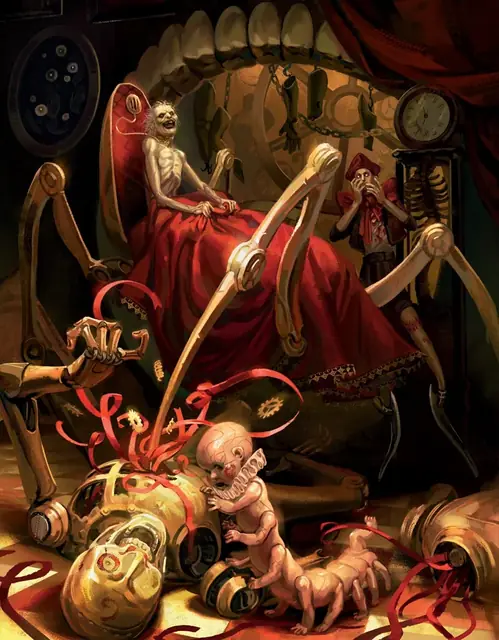

Иван Дилисния
Ivan Dilisnya
Средний Гуманоид, Хаотичный Злой, именной НИП

Класс Защиты 12 Инициатива +8 (18)
Хиты 90 (12к8 + 36)
Скорость 40 футов, Лазания 40 футов
| мод | спас | ||
|---|---|---|---|
| СИЛ | 18 | +4 | +4 |
| ЛОВ | 14 | +2 | +5 |
| ТЕЛ | 16 | +3 | +3 |
| мод | спас | ||
|---|---|---|---|
| ИНТ | 19 | +4 | +4 |
| МДР | 12 | +1 | +4 |
| ХАР | 15 | +2 | +2 |
Чувства пассивное Восприятие 17
Языки Общий
Опасность 5 (1 800 опыта или 2 300 опыта в Домене; БВ +3)
Особенности
Восстановление Тёмного владыки. Спустя 1к10 недель после смерти Иван возрождается с полными Хитами где-то в Борче.
Легендарное сопротивление (2/день, или 3/день в Домене). Если Иван проваливает спасбросок, она вместо этого может в нём преуспеть.
Действия
Мультиатака. Иван совершает две атаки Передней ногой. Он может заменить одну из этих атак использованием Смертоносного устройства.
Передняя нога. Бросок рукопашной атаки: +7, досягаемость 10 фт. Попадание: 11 (2к6 + 4) Колющего урона.
Смертоносное устройство. Спасбросок Ловкости: Сл 15, одно видимое Иваном существо в пределах 30 футов. Провал: 13 (3к8) Рубящего урона. Провал или успех: Буйное заводное устройство прикрепляется к цели до начала следующего хода Ивана. Если до того момента цель добровольно перемещается на 5 футов или больше, она получает 4 (1к8) Рубящего урона. В начале следующего хода Ивана устройство рассыпается прахом и исчезает.
Легендарные действия
У этого существа есть 2 использования Легендарных действий (или 3 использования в Домене); оно может немедленно после окончания хода другого существа потратить одно использование, чтобы совершить одно из следующих действий. Существо восполняет все потраченные использования в начале каждого своего хода.
Ответный удар. Иван совершает одну атаку Передней ногой.
Поле колючек. Иван разбрасывает особые калтропы в 20-футовом квадрате в пределах 5 футов от себя. Калтропы рассыпаются прахом в конце следующего хода Ивана, и он не может совершить это действие снова до начала своего следующего хода. Когда калтропы появляются, все существа в их области подвергаются следующему эффекту; существо, входящее в калтропы впервые за ход или заканчивающее там свой ход, также подвергается этому эффекту. Спасбросок Ловкости: Сл 15 (существо совершает этот спасбросок только раз за ход). Провал: 9 (2к8) Колющего урона, и Скорость цели снижается до 0 до начала её следующего хода.
Бонус мастерства +3
Иван Дилисния
Тёмный владыка детской жестокости
Иван Дилисния — избалованный, жадный до внимания эгоист — сохранил вкусы ребёнка при жалком, иссохшем теле. Общество Борчи в массе своей почитает его новатором и гением. На деле он ни тот, ни другой. Иван — злобный и отталкивающий манипулятор, который, вопреки своему облику и интеллекту, нарочно перенимает ребяческие повадки и манеру речи, лишь бы привлечь внимание. Он одинок — при том, что с рождения имел всё, — и страшится этого одиночества.
Репутацией затворника и лживыми переписками Иван заставляет своих жертв сомневаться в реальности и верить в его всевластие. Он гоняет других по бессмысленным поручениям и заставляет их шпионить за кузиной, Иванной Борицы, которая, по его убеждению, насмехается над ним и повинна в его дряхлости.
Иван окружает себя опасными заводными игрушками и угодливыми механическими слугами. Хотя он изображает, будто сам мастерит эти устройства, на деле Тёмные Силы даруют ему любое творение, сколь бы причудливым оно ни было.
История Ивана
Предательство — фамильная черта рода Дилисния. Край Борча происходит из того же мира, что и завоеватели Баровии — фон Заровичи. В ночь превращения Страда фон Заровича Дилиснии пребывали в замке Равенлофт.
Много веков спустя брат и сестра Борис и Камилла Дилисния замыслили присвоить славу и положение своих кузенов Борицы. Камилла хитростью проложила себе путь в семью Борицы, а Борис тем временем готовил сына Ивана к роли главы объединённого дома Борицы-Дилисний.
Несмотря на все возможности, Иван ненавидел планы родителей на его судьбу, вынужденно сбегая в мир ребяческих пороков и прихотей. Богатство семьи и потакающая челядь лишь усугубляли дело, а сам Иван всё глубже погружался в мир детских игрушек и привычек. Вокруг него то и дело происходили «несчастные случаи» — семье приходилось заминать увечья и гибель множества питомцев и слуг. Лишь любимую сестру Кристину не трогали его злые проделки. Родные всё больше тревожились, но продолжали оберегать будущего главу дома; они даже перестраивали поместье и вкладывали средства в его причудливые развлечения.
В ту самую ночь, когда Иванна Борицы отравила свою семью, Иван узнал, что родители намерены отослать Кристину в престижный пансион. Крики, жестокий хохот и визг заводных механизмов наполнили усадьбу. Когда всё стихло, Иван Дилисния остался последним живым из своей семьи, а Туманы уже сомкнулись вокруг Борчи.
Домен Иванки и Ивана
Борча, домен Иванны и Ивана, изменяется из-за их присутствия, что создаёт следующие эффекты:
• Закрытие границ. Когда Иван находится в домене, он способен по желанию закрывать или открывать границы Борчи. Когда границы закрыты, Туманы вокруг Борчи наполняются колючей проволокой. Туманы становятся Труднопроходимой местностью; когда существо входит в Туманы или перемещается внутри них, оно получает 2к4 Колющего урона за каждые пройденные 5 футов. Как только Иванка или Иван закрывают или открывают границы, ни один из Тёмных владык не может сделать это снова до следующего рассвета.
• Таинственные письма. Всякий раз, когда Иван пишет и направляет письмо существу в Борче, чьё имя он знает и видел раньше, на следующем рассвете это письмо появляется рядом с существом в очевидном, но не наблюдаемом месте (например, на прикроватном столике или в снаряжении).
• Шпионы. Когда Иван находится в Борче, он может сотворять Подсматривание, не нуждаясь в Материальных компонентах (заклинательная характеристика — Интеллект). Для срабатывания заклинания в пределах дистанции должна быть кукла Крошечного размера или меньше, из которой возникает магический сенсор.
Если один из Тёмных владык умирает, все его эффекты мгновенно исчезают. Они возникают снова, если тот возрождается (см. Восстановление Тёмного владыки).